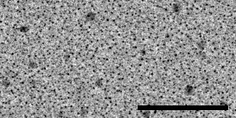
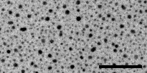
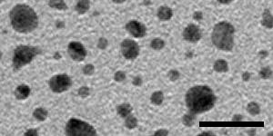
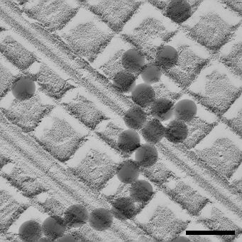
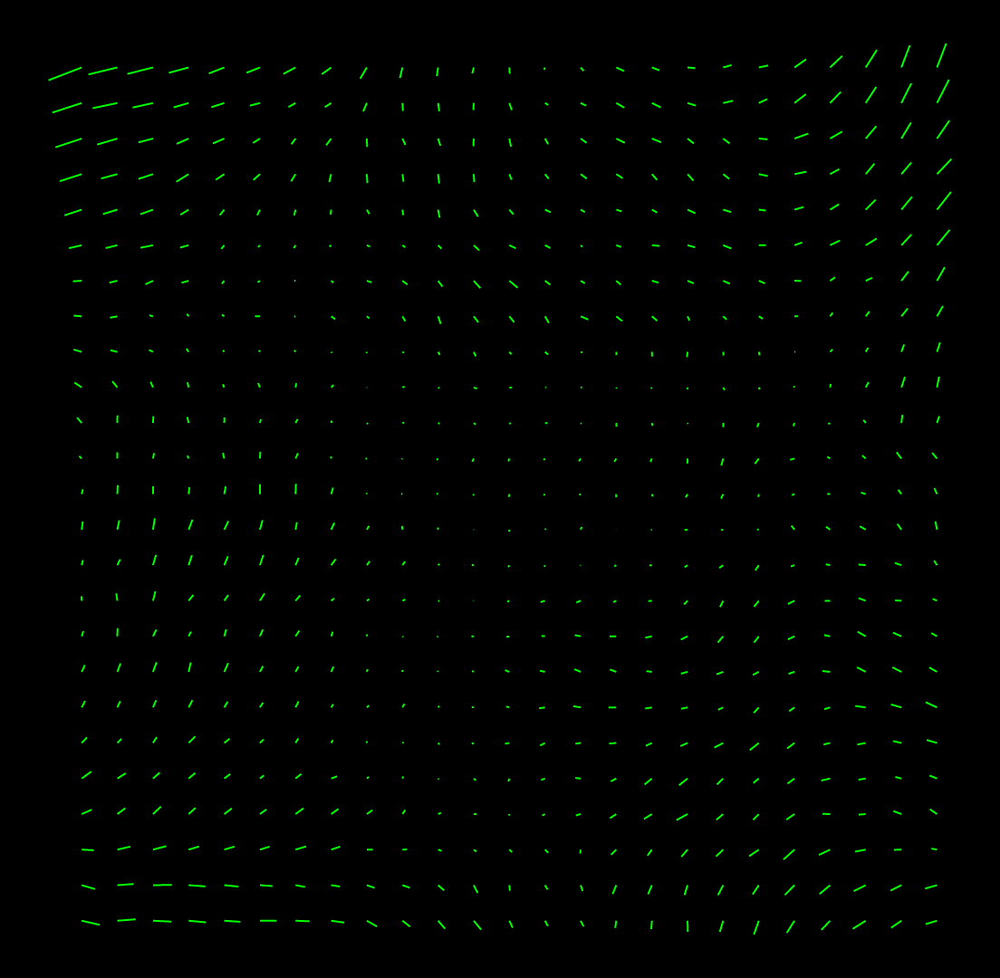

IMOD contains two kinds of distortion correction that can be applied in the Newstack and Blendmont programs. One is a correction for a fixed distortion in the imaging process at a particular magnification. The other is a correction for the magnification gradient involved when imaging a tilted specimen. In each case, calibrating the distortion requires taking images on the microscope (preferably with SerialEM) and analyzing them in IMOD. For imaging distortion, this document gives some background information and describes how to acquire the images and analyze them. Instructions for calibrating magnification gradients have not yet been incorporated into this document and are available upon request.
To measure a distortion field at a particular magnification, you need to take pairs of overlapping images, where only the stage is moved between the two images of a pair. When these images are lined up where they overlap, the distortion field causes image movements when toggling between two images. The image displacement at a given point is the difference between the distortion vectors at two different points in the field. This means that if we measure enough image displacements we can solve for the underlying distortion field. To obtain a robust solution, we want to have a situation where there are about twice as many measured displacements as unknown vectors, and where the different measurements are somewhat independent rather than redundant. This can be accomplished by taking four sets of pairs, where each pair overlaps over at least 50% of their area and the two images of a pair are arranged horizontally, vertically, or along 45° or 135° diagonals. These images are then analyzed with Finddistort.
SerialEM has a procedure that will obtain such pairs (the Calibrate - Distortion menu item). It will work out the stage backlash, take an image, move the stage in the desired direction, take a second image, and assess the overlap. If the overlap is not within a specified range, it will try again, adjusting its local stage scaling to try to get a better result. On an FEI microscope, this procedure is remarkably successful up to a magnification of about 50K with an Ultrascan 4000 camera (1 micron field of view). For smaller fields of view, it is prone to fail due to imperfect and non-ideal stage behavior, and it may require trying several times at different stage positions.
The specimen for taking these paired images must be rich in image information, because displacement will be measured in small patches, by default only 24 pixels square. If there are significant empty areas in the image, patches in these locations will not have enough information to give good correlations. An ideal specimen has been prepared by Misha Sherman at University of Texas Medical Branch, by sputter-coating gold onto standard carbon-coated grids. The images below, from left to right, were taken with a US4000 on an F20 at 5K, 19K and 80K; scale bars are 500, 100, and 20 nm. At the lowest magnification there are some larger particles as well as dense fine detail from the many small particles; at intermediate magnification there is still a good distribution of small dense particles in the gaps between larger ones. At high magnification, the gaps between particles are large enough to be a concern, but there is sufficient structured detail from the carbon to allow the correlations to succeed in the gaps. The largest particles may disappear with beam exposure, but are not needed for the image correlations to work at lower magnifications.
  
Sections of stained material can also be used provided that that there is sufficient density everywhere in a field. High-pressure-frozen, freeze-substituted material is best because it tends to retain more detailed structure in the cytoplasm. More extracted material may work at low to intermediate magnifications and fail at higher magnifications as empty areas become too large. Large mammalian cells (for example, T-cell lymphocytes) and tissue sections should be suitable. Sections of yeast cells are not optimal because they contain vacuoles and their area is often not large enough. The cross-line grating with gold crystals is not an adequate specimen except at relatively low magnifications, because the areas without gold do not have much information in them.
The specimen does not need to be very resistant to shrinkage in the beam if you can acquire the pairs automatically with SerialEM. The specimen does not need to have significant thickness (unlike the specimen needed for measuring the stretch in the distortion field, described below). A sputter-coated grid or a suitable plastic section may be available upon request.
The images themselves must be rich in high spatial-frequency information and have relatively little noise. In addition, the images generally do not need to be any larger than 1024 pixels. One approach with CCD camera images is to bin the images to no larger than 1024 pixels, in order to operate the camera in its most efficient zone, and set the beam and exposure time to give clean images with a high number of counts (e.g., > 1/2 of saturation). However, it may be easier to get a good signal-to-noise ratio by acquiring 2K images with higher exposure time. With direct detectors, it is more appropriate to acquire 2K images or even unbinned images to avoid saturation of the 16-bit image.
The default spacing parameters for analysis in Finddistort are tuned to 1K images. If you do take images larger than 1K, you should either reduce them to 1K or scale the various parameters up by the appropriate factor (details are given below). There is some evidence that the latter approach may give better fits, as long as the data have little noise. However, there is no filtering of the image data in Finddistort, so if the images are somewhat noisy, they should be reduced to 1K. Reduction can be done in Newstack with binning or with anti-aliased reduction using the "-shrink" option. If you take 4K images, you should at least reduce them by 2. Reduction by 4 should definitely done with the "-shrink" option to remove aliased noise (i.e, "-shr 4").
The information provided by the pairs of overlapping images can be used to solve for a distortion field that does not contain any overall stretch. A stretch along one axis of 1-2% is typical for projection in an EM, and an energy filter and camera imperfections may impose even bigger stretches. Using a distortion field without this stretch included will not impair the blending of overlap zones in montages, or the alignment of tilt series (at least if the "Projection stretch" variable is included in the alignment). However, it will result in slightly anisotropic reconstructions.
To determine the stretch in the distortion field, you need an image of the same structure rotated by 90°. The difficulty here is that if the structure is tilted differently in the two views, then it may be foreshortened by the tilt and some of the stretch in the alignment transform will reflect this foreshortening rather than the stretch in the distortion in field. Although this effect is a small one because the cosine is very close to 1 near 0°, it is possible to control for it. The solution is to take a small tilt series of a specimen that has some distribution of features in depth, before and after rotating by 90°. The pairs of views from the two series that match the best will be the closest to being tilted the same in the two orientations, and will give the best estimate of the stretching due to rotating in the distortion field. Matchrotpairs is used to find the best matching pair of images.
The tilt series should be at 1.5° intervals between -4.5° and 4.5°. The tilt series does not need to be very well aligned; the simple macro given below is adequate for acquiring it. The rotation does not need to be exactly 90° (80° is good enough). Images 1K in size are adequate.
The most important thing is to get a pair of images before and after the 90° rotation. Being able to refine the estimate by controlling for tilt is secondary; in the extreme case, a tilt of 4° will make the estimate of stretch be off by 0.0024.
The challenges in this measurement are in finding the same area after 90 degree rotation, preventing excessive shrinkage between the first and second setes of images, and having enough 3D information to allow the best set of corresponding views to be found. Three kinds of specimens are suitable: plastic sections with thickness of at least 150-200 nm, the standard cross-line replica grating with latex spheres, and colloidal gold placed rather densley on both sides of a thick film. Each has different considerations:

Macro 1: TiltTo -8 TiltTo -4.5 T Macro 2: Loop 7 R S TiltBy 1.5 EndLoop TiltTo 0
The analysis proceeds in three stages. First you use Finddistort to get a stretch-free distortion field. Then you use Matchrotpairs to analyze the rotated images and get a transformation that provides information about the stretch. Finally, you rerun Finddistort with this transformation to get the true distortion field.
If you do not have 1K images, you need to increase four parameters proportionally from their defaults. The parameters are the spacing between correlated boxes ("-grid", default 16), the spacing between values used to solve the linear equations ("-data", default 20), the spacing between values in the distortion field file ("-field", default 40), and the size of the correlated boxes, which is normally the only parameter that is varied ("-box", default 24). Thus, for 2K images, you should add "-gri 32 -dat 40 -fie 80" to all of the Finddistort commands given below, plus either "-box 48" or double the recommended increase in box size.
Analyze a stack of distortion pairs with:
finddistort -bin 4 -pat dp18K.mrc 18KThe binning must be specified with the "-bin" parameter. It should be the final binning, the product of the binning on the camera and any reduction applied to the images. The "-pat" parameter makes the program output a .patch file that can be converted to an IMOD model with Patch2imod. The input file is the file of distortion pairs for one mag, and the last entry is a root name for a variety of output files.
When you run this you will see output for each iteration such as:
Shift changes: 0.30 0.24 0.06 0.18 -0.28 0.15 -0.33 -0.03 iteration 2 mean change in shift 0.314042598 5436 rows of data, 43718 entries condition # 851.695984 874.654541 Mean and max residual in fit: 0.163 0.532 Mean and max change in field: 0.0157 0.0648The first line shows how much the shifts used to align the overlapping images changed between iterations, and the second line shows the mean change.
If the maximum residual is higher than 1 (or ~1.7 for 2K images), you should increase the box size from its default of 24. Try 32, and if the error is still high, try 40 (64 and 80 for 2K images). With these larger box sizes, reduce the indent to 2; i.e., add the arguments "-box 32 -ind 2".
You can check how well the initial shifts were determined with:
midas -b 0 dp18K.mrc 18K.rawxfAll of the pairs (1-2, 3-4, 5-6, 7-8) should look as well aligned as possible, but when you toggle between them you will see the effects of the distortion field.
You can see how well these images match after distortion correction with:
midas -b 0 dp18K.udst 18K.udxfThe pairs should match very well.
You can visualize the distortion field by converting the patch file to a model:
patch2imod -f 18K.patch 18K.mod 3dmodv 18K.modIf the vectors are too long and overlap too much, add the option "-s 5" to set the scaling to 5 instead of 10 in the Patch2imod command. If you open the model with 3dmod instead of 3dmodv, the vectors will be displayed with arrowheads in the Zap window. A good set of vectors should change relatively smoothly between adjacent positions and not have wild vectors. Here is an example:

The second step is to analyze the rotated images. If you used a plastic section or a cross-line grating with enough depth information, this step is easy:
matchrotpairs -d 18K.nosidf -b 4 18Kts1.mrc 18Kts2.mrc rp18K.xfHere you provide the no-stretch distortion field, specify the binning of the images again, and give the names of the tilt series files and an output file for a transform.
You will see a difference measure for every possible pair, with a star as each new minimum is reached, and at the end the pair that gives the best match will be listed. All of the differences should be somewhat low at the proper rotation angle and much higher at the wrong angle. You can visualize the quality of the fit between the best pair with
midas -b 0 rp18K.stack rp18K.xf
If the fit is poor, or if you have anomalously high differences at the proper rotation angle, rerun Matchrotpairs with "-m" to run Midas and set the initial alignment. Also, prior to IMOD 4.8.27, it might be necessary to run Midas to set the rotation angle if it is not within ~5 degrees of 90. This time you can add "-a" and the rotation angle determined from the first run (+90 or -90). Midas will open up with the central image from each tilt series. Use shift and rotation to align the images. Save the transforms and exit Midas. All pairs will then be analyzed with this alignment as an initial alignment. If Midas opens twice due to a bug in the new version of Matchrotpairs (IMOD 4.8.27 - 4.8.37), you can prevent this with the option "-mirror -1".
If the procedure seems not to have found the best pair, it is possible to check the pairs manually. First rerun Matchrotpairs with the "-x" option to have it output all of the transformations to a set of files, one for each section in the second tilt series. You must include either the "-a" or the "-m" option to get this output. You can use "-za" and "-zb" to run on a subset of the sections, but if so always start from section 1 to avoid confusion about which sections are being referred to. For example:
matchrotpairs -za 1,5 -zb 1,5 -a 90 -x -d 18K.nosidf -b 4 18Kts1.st 18Kts2.st rp18K.xfwill produce a set of 5 transform files, rp18K-1.xf, rp18K-2.xf, etc, that contain the transforms for aligning each of the sections in the first series to section 1, section 2, etc in the second series.
You also need undistorted stacks:
newstack -ima 4 -dis 18K.nosidf -sec 0-4 18kts1.mrc 18kts1.udst newstack -ima 4 -dis 18K.nosidf -sec 0-4 18kts2.mrc 18kts2.udstwhere "-ima" specifies the existing binning of the data. Then you can run:
midas -b 0 -r 18Kts2.udst 18Kts1.udst rp18K-1.xf
When this starts, you can assess the match between each section of ts1 with section 1 of ts2. To compare with the next section, use the menu entry File - Load transforms and select rp18K-2.xf. Then make the reference section be 2 and you should see aligned image pairs again. In general, make the number of the reference section match the number of the transform file. In this way, you can compare all pairs if necessary and find the best match. Finally, rerun Matchrotpairs without the -x option and specifying the best pair of sections. For example, if the best reference section is 2 and the best current section is 4, enter "-za 4,4 -zb 2,2".
Once you have the rotation pair transform, you rerun Finddistort:
finddistort -bin 4 -pat -usexf -str rp18K.xf dp18K.st 18KThe "-usexf" tells it to use the existing raw transforms on the first round, and "-str rp18K.xf" tells it to derive the stretch from the transformation file. Be sure to add "-box", "-ind", and other parameters that you used on the last initial run.
At the end of this run you will see a lot of output about the stretch transformation:
Pair has rotation = 90.02, mag = 1.0171, stretch = 0.9625 on 76.3 deg axis Mean mag = 0.9978, using mag = 1.0193 and stretch = 0.9625 No-mag transformation: 0.008361 -0.983182 1.017184 -0.009197These lines describe the transformation between the rotated images in terms of a rotation, magnification, and stretch. If the mean mag is not 1.0, then the transform is scaled up to have a mean mag of 1.0 by increasing its mag component. The result is a no-mag transformation that can then be assumed to be the result of the same underlying stretch in the two images.
True rotation = 90.02, underlying stretch = 1.0096 on 76.4 deg axis Stretch transformation: 0.991546 0.004387 0.004387 1.008546These lines describe the underlying stretch transformation that must be added to the distortion field.
Implied no-mag transformation: 0.008356 -0.983182 1.017184 -0.009192The stretch implies a transformation between rotated images, which should match the no-mag transform given above.
Embedded transformation: 0.991543 0.004386 0.004386 1.008542After adding the stretch into the distortion field, the field is analyzed to determine the net stretch transformation that has been embedded in the field, which should closely match the solved stretch transformation above.
The final distortion field is in the file with extension ".idf". Rename such files if desired to provide whatever information users need to identify it (e.g., the date or the camera). In order for eTomo to find the files, place them in a subdirectory named "Distortion" of the directory pointed to by the IMOD_CALIB_DIR environment variable. By default this directory is /usr/local/ImodCalib except on Windows systems without Cygwin, where it is C:\ProgramData\IMOD.